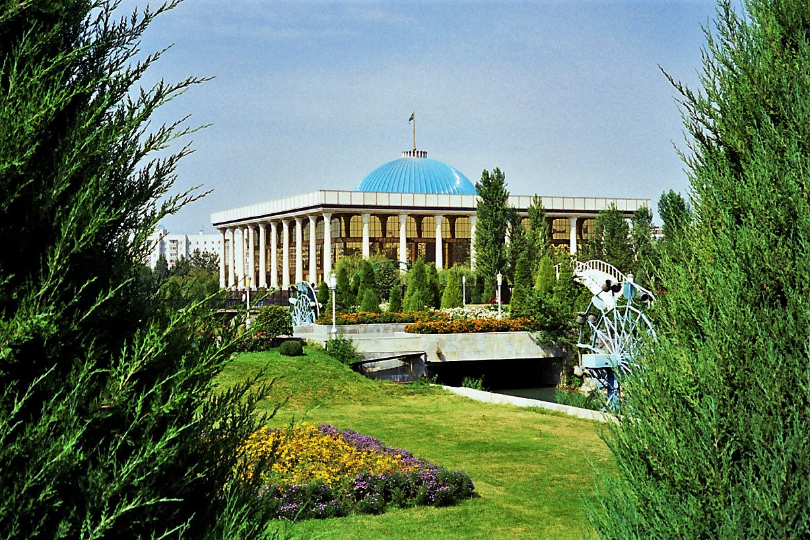

The Constitution of Uzbekistan (1992): its adoption and core principles
Adopted on 8 December 1992, independent Uzbekistan's first Constitution — its structure, core principles, the state bodies it created, and the later (2002, 2023) reforms. With dates and figures, a facts-based history.

The Constitution of the Republic of Uzbekistan — the basic law of the independent state — was adopted on 8 December 1992. It became the foundation of nation-building after independence (31 August 1991). The following sets out its adoption, structure, core principles and later reforms, with dates, based on official and reputable sources.
Adoption
The Constitution was adopted on 8 December 1992 at the 11th session of the Supreme Council (Oliy Kengash) of the Republic of Uzbekistan (the 12th convocation). It was independent Uzbekistan's first Constitution, replacing the Soviet-era 1978 (Uzbek SSR) constitution. The parliament that adopted it was the same convocation that had declared independence on 31 August 1991.
The steps toward independence: on 20 June 1990 a Declaration of Sovereignty was adopted (Uzbekistan was among the first to do so), and on 31 August 1991 independence was declared.
Drafting the text
In June 1990 the Supreme Council created a 64-member Constitutional Commission chaired by Islam Karimov. Work on the draft began in early 1991, an initial text was ready in October–November 1991, and it was finally adopted on 8 December 1992. Every 8 December is celebrated as Constitution Day, a public holiday.
Structure and core principles
The original 1992 text consisted of a preamble plus 6 parts and 26 chapters, comprising 128 articles in total. Its core principles: Uzbekistan is a sovereign, democratic republic; the people are the sole source of state power; the state is secular (religion and state are separated); a presidential system with separation of powers (legislative, executive, judicial); and guarantees of human rights and freedoms.
The state language is Uzbek (Article 4). The law on the state language predated the Constitution — it was adopted on 21 October 1989 (now marked as "Uzbek Language Day").
The state bodies it created
The Constitution established the main state institutions: the President (head of state and the executive); the Oliy Majlis — the parliament (unicameral under the 1992 text); and the judiciary (Constitutional Court, Supreme Court, Higher Economic Court). The Oliy Majlis later became bicameral — after the 2002 referendum.
The 2002 reform: a bicameral parliament
A referendum held on 27 January 2002 decided two questions: extending the presidential term from 5 to 7 years, and creating a bicameral Oliy Majlis. Both were approved by more than 90% of the vote. The new bicameral parliament — a Legislative Chamber (120 seats) and a Senate (100 seats) — began work in 2005 after elections. Amendments in 2011 redistributed some powers toward the Prime Minister and parliament.
The major 2023 reform
The largest reform came in 2023: a referendum was held on 30 April, and the updated Constitution took effect on 1 May. According to official figures, turnout was 84.51% and 90.61% voted "yes." The number of articles rose from 128 to 155 and of norms from 275 to 434; about 65% of the text was renewed, and human-rights provisions increased about 3.5-fold.
The 2023 revision extended the presidential term from 5 to 7 years and reset the term count — which allowed the sitting president, Shavkat Mirziyoyev, to run for two more 7-year terms. The abolition of the death penalty was also enshrined at the constitutional level. Notably, 8 December was kept unchanged as the date of the Constitution's adoption and as the holiday.
A note
This article is based on historical facts. Some sources give slightly different counts of parts/chapters depending on translation (for example, 26 or 27 chapters after 2023). Sources: the official Constitution of Uzbekistan portal (constitution.uz), lex.uz, ILO NATLEX, the Constitute Project, Gazeta.uz, Kun.uz and the U.S. Library of Congress.
Sources
- Constitution of Uzbekistan — official portal (constitution.uz)
- ILO NATLEX / lex.uz — Constitution adopted 8 December 1992, 11th session of the Supreme Council
- Constitute Project — Uzbekistan 1992 constitution (structure and principles)
- 2002 Uzbek constitutional referendum (27 Jan 2002) — bicameral Oliy Majlis, 5→7-year term
- Gazeta.uz / Kun.uz — 2023 constitutional reform (referendum 30 April 2023; 128→155 articles; 84.51% turnout, 90.61% yes)
- U.S. Library of Congress, Global Legal Monitor — Uzbekistan new constitution in force 1 May 2023